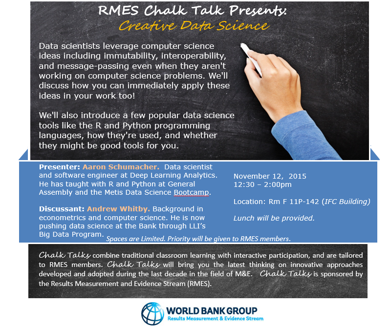

Creative Data Science
Thursday November 12, 2015
A “Chalk Talk” “Brown Bag Lunch” for the World Bank Group IFC (International Finance Corporation) RMES (Results, Measurement and Evaluation Stream) on Thursday November 12, 2015. (slides)
This is the flyer the World Bank folks made:

Here are some questions the audience was asked to answer and discuss before things got rolling:
- What are you reading?
- What is your favorite tool, process, or technique for your work?
- What is your least favorite tool, process, or technique for your work?
- What was the last new tool, process, or technique you learned (or are currently learning)?
- What would you like to learn next?
@planarrowspace
Hi! I'm Aaron. This is my blog and my twitter handle. You can get from one to the other. This presentation and a corresponding write-up (you're reading it) are on my blog (which you're on).

I was invited to give a talk about “the data scientist's toolbox”.
A lot of people, when they hear “the data scientist's toolbox”, may think of some programming language, or some particular suite of implementations like Hadoop or Spark.

Here's a tool!
It's the AlexNet deep convolutional neural network that was state of the art for identifying things in images a couple years ago. We could use an implementation from the Model Zoo on Caffe, which would probably still have the 11-by-11 convolutions on the first layer, but likely wouldn't split the computation across two GPUs that way, yadda yadda yadda, this kind of thing is relevant to some of the work my current company is doing, yadda yadda yadda.
This might be interesting for some people, but for a lot of people I suspect it would not be.
“Be regular and orderly in your life so that you may be violent and original in your work.”
I came across this Flaubert quote somewhere, and I like it quite a lot.
The tools I'm focusing on help me to be regular and orderly in my everyday work.
Being regular and orderly in everyday work means that everyday work becomes easier, leaving capacity for more sophisticated work.
From the other side, even if your work is very sophisticated, you still have to attend to the everyday, and life will be better if it is well attended.

Another angle is this:
What's more important to the painting, the painter or the brush?
Certainly you need both, and tools are more or less a requirement everywhere. But the mental tools, the skills and experience of the painter, these make the lion's share of the difference in the end results.
I've taught “data science tools” for a number of years, and my overwhelming impression has been that mental tools matter more than the particular software people happen to use. So I'm going to try not to be overly specific to one particular domain or tool.
It is nice to have good tools, and I will talk about R and Python—but there's also a risk of imbuing external tools with undue importance.

The first question I asked earlier (“What are you reading?”) may have seemed not to be about tools, but it is. Reading builds you new tools.
Here's what I'm currently reading: a book called “Debugging Teams”. Good book!
You have a great team here at the World Bank, and I want to point out that you're doing a great thing today, taking your lunch to become even greater. That's exactly the kind of thing that strong teams do.
create
Some bad news:
Most of what I'll say are other people's ideas. And I may not always cite sources.
Worse, I probably don't even have quite the right ideas for you.
I'm going to talk about some things that I think help me to create
My hope, and the reason for calling our time together today “Creative Data Science”, is that
A central point of “Debugging Teams” is the importance of humility, respect, and trust.
In that spirit, I want to thank you for coming together in this safe collaborative space. The only people who can do it are you.
interdisciplinary thinking (vs. disciplinary thinking)
“The idea is not to replace one tool with another but rather build a better ecosystem of complementary tools.” (presentation from Jeffrey Heer)
--
what book reading? debugging teams learning organization not about me is today the day you have that great idea???
What are you going to take from today?
Thanks!
Thank you!
@planarrowspace
This is just me again. “the data scientist's toolbox” “the data scientist's toolbox”